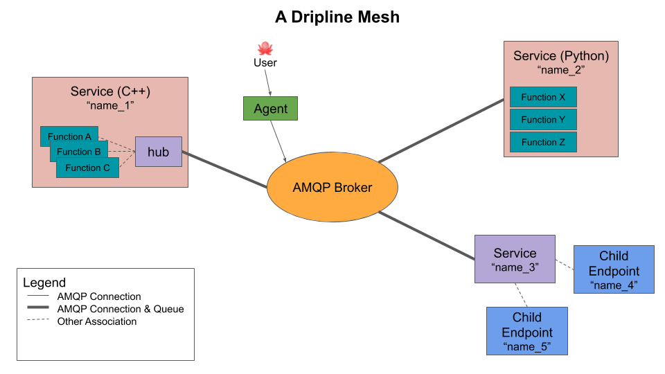

Architecture¶
Dripline is a protocol for a controls framework aimed at medium-sized experiments, where one wants a distributed and flexible controls system. A full Dripline-based system is called a “mesh,” and it comprises a number of different types of components, including the broker, endpoints, and services. A user typically interacts with the mesh via an agent. Each part of the system will be described in its own section below.
The Mesh¶
A full Dripline system is called a “mesh.” The main components of a mesh are a AMQP broker and any number of producers and consumers of messages. At the most basic level, agents send requests to endpoints, which can send back replies, and messages are directed to their destination via a broker.
The instruments and pieces of software that are part of the controls system are represented by “endpoints” and “services.” Endpoints and services give the instruments and software the interface they need to communicate using a common communications protocol. They can receive requests from users, and send replies back (and they can make requests to each other). They can also send alert-message broadcasts to the entire mesh.
Users are represented by an “agent,” which can send messages to anything on the mesh, and receive replies to requests.
AMQP Broker¶
The central element of a Dripline mesh is the AMQP broker. The broker is responsible for directing messages from sender to receiver.
While the Dripline standard does not require a particular implementation of AMQP, the official Dripline implementation uses Rabbitmq.
Endpoint¶
An endpoint is the basic message receiver in a mesh. The endpoint will take the appropriate action in reponse to a request, and send a reply back.
Agent¶
An agent is the primary way in which users interact with a mesh. A user can send a message to any component of the mesh, and receive replies.
Service¶
The primary unit of software that connects with the broker is the “service.” A service will typically correspond to a single instrument (e.g. power supply) or piece of software, and it might have one or more child endpoints. The service is responsible for maintaining its connection with the AMQP broker, and organizing and operating its child endpoints.
Operating a Mesh¶
While the Dripline standard specifies what can go in a mesh, it does not specify how a mesh is deployed. The Dripline developers recommend the use of containers and a deployment menthod like docker-compose or Kubernetes.
The first thing to be deployed should be the broker.
Next, the services that will be used should be deployed, configured so that they connect to the broker. For basic functionlity as a controls system, those services might include the relevant instruments and pieces of software, a database for storing values, and a logging service to record data in the database.
Finally, the user can use the agent (dl-agent in the official implementation) to send messages. The official implementation also includes dl-mon to allow users to monitor the messages being passed back and forth in the mesh.